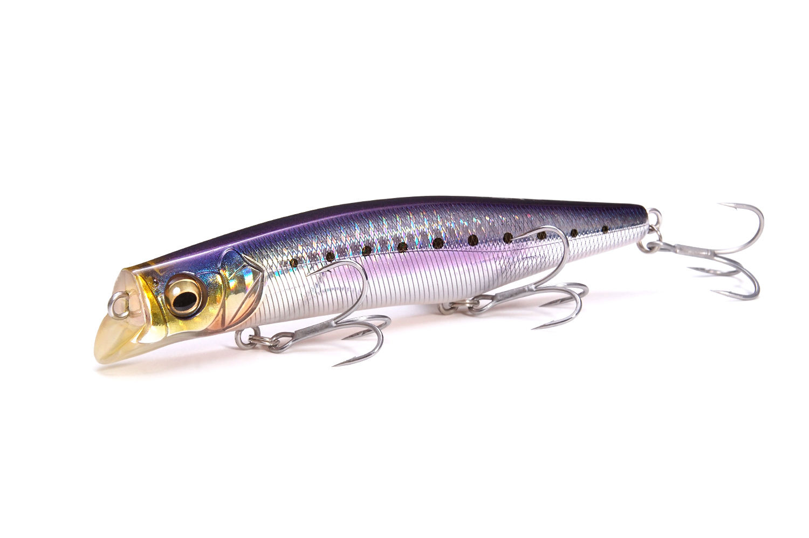
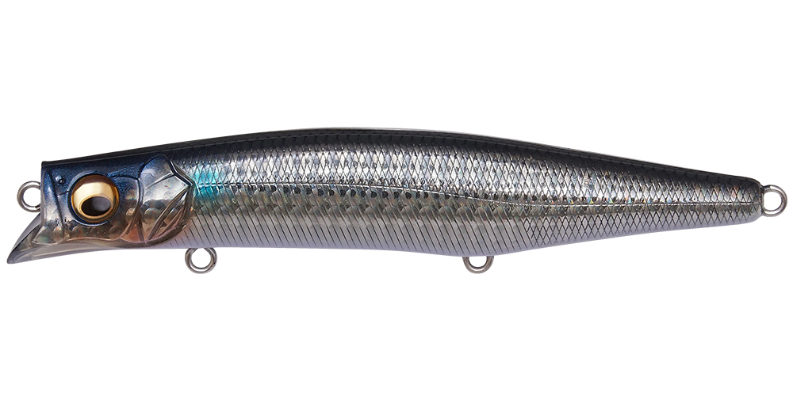
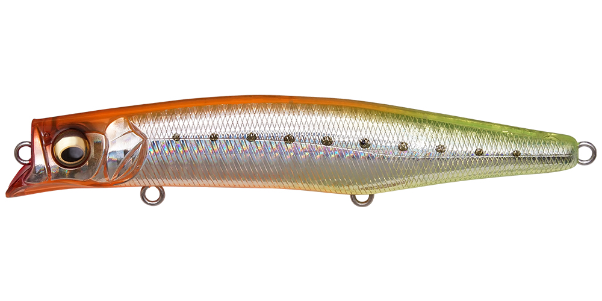
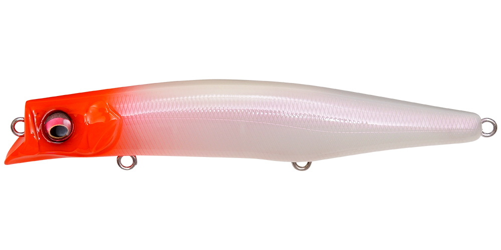
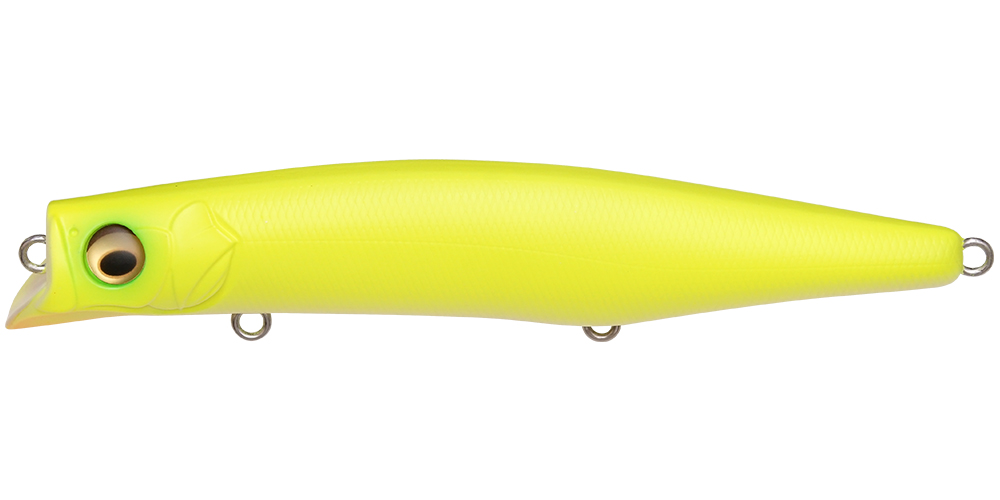

カゲロウMD125F
（KAGELOU MD 125F）
カゲロウMD125F（KAGELOU MD 125F）はMegabass（メガバス）のフローティングミノーです。
シャローランナーの人気作「カゲロウ124F」のシリーズに、さらにレンジ展開を広げるミッドダイブモデル。独自のスポイラービルで最大0.8mのレンジを捉え、124Fより一段下の層を攻略できます。LBOⅡによる超遠投で、磯やサーフなどラフな環境にも対応するリップレスミッドダイバーです。

画像出典:メガバス公式HP
スペック
- メーカー
- Megabass（メガバス）
- タイプ
- フローティング（リップレスミッドダイバー）
- 全長
- 125mm
- 自重
- 21g
- レンジ
- MAX 0.8m
- フック
- #4×3
- 重心移動
- LBOⅡ（PAT.）
- ターゲット
- シーバス
- 価格
- 2,530円（税込）
▼今すぐチェック

カゲロウMD125Fの特徴
124Fの一段下を、荒れた状況でも飛び出さずに引ける“タフコンディション向け”のミッドダイバー
-
スポイラービルで最大0.8mの絶妙なレンジ
独自のスポイラービルが、捕食レンジにシビアな魚に反応させるための最大0.8mのフィーディングレンジを捉える。シャローランナーのカゲロウ124Fでは届かない、一段下の層を攻略できる。
-
荒れた波風や潮流でも水面から飛び出さない
強化したダイビング・スタビリティで、荒れた波風や潮流による水面からの飛び出しを抑える。外洋の磯場やサーフなど、ラフな環境でもアクションが破綻しにくい。
-
LBOⅡで超・長距離飛行
ロングゾーンで瞬間移動する重心移動システムLBOⅡ（PAT.）を搭載し、同サイズのルアーの平均的な飛距離を大きく上回る遠投性能を実現。タフな状況の魚も射程圏内に収められる。
カゲロウMD125Fの使い方
基本はただ巻き。巻き始めるとスポイラービルが水を受けて潜り、最大0.8m前後のレンジを引いてきます。
まずはカゲロウ124Fなどで表層を探り、反応が無ければMD125Fで一段下を通す、というレンジの刻み方が組み立ての基本。波や流れが強い場所でも水面から飛び出しにくいので、ラフな状況でも同じコースを丁寧に通せます。
カゲロウMD125Fの得意な状況
外洋の磯場やサーフなど、波や風が強いラフな環境が最大の出番。
表層のシャローランナーに反応が無いとき、魚が少し下のレンジにいるタフな状況で強い1本です。遠投性能を活かして、沖のブレイクや払い出しまで届かせたい場面でも頼りになります。
ワンポイント
濁りやローライトでレンジを少し入れたいときは、カゲロウ124FよりMD125Fを選ぶのがオススメです。
ロッドを立て気味にすると浅め、寝かせると深めと、ロッドの角度でも潜る深さを微調整できます。底が近いポイントでは、ロッドを立てて根掛かりを避けながら引きましょう。
カゲロウシリーズの使い分け
| モデル | 全長／自重 | 得意な場面 |
|---|---|---|
| カゲロウ100F | 100mm／12g | レンジ20〜60cm。港湾・河川で扱いやすいコンパクトサイズ |
| カゲロウ124F | 124mm／22g | レンジ0〜20cm。表層特化のシャローランナー |
| カゲロウMD125F | 125mm／21g | 最大0.8m。124Fの一段下を攻めるミッドダイバー（本記事のモデル） |
カゲロウシリーズは、同じ“揺らぎ”系のアクションでレンジ違いを選べるのが魅力。表層なら124F、一段下ならMD125Fと、レンジで持ち替えるとローテーションが組みやすくなります。詳しくはカゲロウ124Fの記事も参考にしてください。
人気カラー
カゲロウMD125Fは豊富なカラーラインナップを展開。シーバス狙いでオススメのカラーを厳選して紹介します。

GG ボラボラ（イナッコ）パターンに合わせやすいナチュラル系。

GG ナイトライトイワシ常夜灯周りなど、ナイトゲームのイワシパターンに。

PM センシングレッドヘッド定番のレッドヘッド系。濁りやナイトでシルエットを出しやすい。

ドチャート高アピールのチャート。マズメや濁り潮に。
画像出典:メガバス公式HP
カゲロウMD125Fに似ているルアー
-
 カゲロウ124F
メガバス
詳細はこちら＞
カゲロウ124F
メガバス
詳細はこちら＞
同シリーズのシャローランナー。レンジ0〜20cmの表層特化で、MD125Fより一段上を探りたいときに。表層→一段下のローテーションの相棒。
-
 カゲロウ100F
メガバス
詳細はこちら＞
カゲロウ100F
メガバス
詳細はこちら＞
同シリーズの100mmモデル。レンジ20〜60cmで、港湾や河川などでよりコンパクトなシルエットで探りたいときの持ち替えに。
-
 コモモ125カウンター
ima
詳細はこちら＞
コモモ125カウンター
ima
詳細はこちら＞
全長125mm・自重22gの海水サスペンドモデル。レンジ30〜60cmと、表層より一段下を同じ125mmクラスで狙える点が共通する。